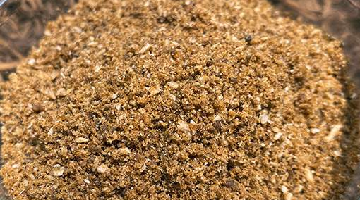
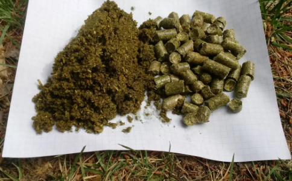

Related products
Natural fertilizer is a good choice

Bone meal
- bone meal is created through the steam processing and pulverization of animal bones
- It also contains calcium, another essential plant nutrient
- Phosphorous is most available to plants when the soil pH ranges between 6.0 and 7.0
- Be sure your pH is adjusted accordingly to get the maximum benefit from bone meal

Alfalfa meal
- An all-around good source of all three macro-nutrients (2-1-2 to 3-1-2)
- alfalfa meal also has high microbial content. Though it takes a few months to break down, the many trace nutrients and plant growth hormones present in alfalfa meal stimulate plant growth as well as soil biological activity.